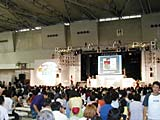
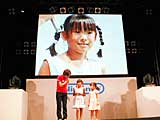
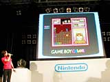

| #5 「ハムスター倶楽部あわせてチュー」対戦ゲーム大会 |
|  かわいいハムスターが登場するパスルゲーム『ハムスター倶楽部 あわせてチュー』。 このソフトのイベントが、11時15分からイベントステージで行われました。ソフトの通信機能を使っての対戦です。小さい子どもたちも『ハムスター倶楽部』が大好きなのか、たくさんの観客が集まりました。 |
|  ステージでは10組の子どもたちが対戦をくりひろげました。さすが人気シリーズ、小学１年生から中学３年生まで、幅広い年齢の子どもたちが参加しています。低学年の子でも連鎖プレイを連発したり、なかなかの健闘ぶりです。中には「知らない間に勝っちゃった！」という人もいて、会場の笑いを誘いました。また、女の子のプレーヤーが多かったのも印象に残りました。 |
|  ゲーム中はプレー画面がスクリーンに映され、かわいいハムスターのキャラクターがちょこちょこ動くようすが見られます。負けそうになると、ハムスターがブルブルふるえるなどおもしろい仕掛けが盛りこまれていて、友だちどうしでわいわいプレーできそう。イベントに参加した子どもたちも口をそろえて「楽しかった」と言っていました。 |
|
|